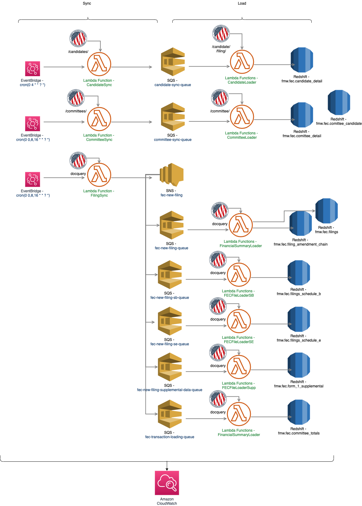

Data
Data Flow
The data-flow diagram below shows events, lambdas, queues, and RDS tables. Most data originates with the FEC API but also uses fecfile to parse FEC filings from https://docquery.fec.gov/paper/posted/{fec_file_id}.fec.
You can also view the lambdas, along with monitoring and logging, through the aws console./
Data-Flow Diagram

Data Model
The tables came from:
- The FEC API
- candidate_detail -> CandidateDetail from https://api.open.fec.gov/developers/#/candidate/get_candidate__candidate_id__
- committee_detail -> CommitteeDetail from https://api.open.fec.gov/developers/#/committee/get_committee__committee_id__
- committee_candidates -> CommitteeDetail
- The docquery filings
- filings
- filings_amendment_chain
- filings_schedule_b
- filings_schedule_e
- form_1_supplemental
- committee_totals
If you inspect the data-flow-diagram above you can see what API was used to make any redshift table.
Each API endpoint returns a different Data Model. The APIs and their DMs are listed above.
The docquery API returns fec files which are pretty free-form
Entity Relationship Diagarm
This was generated using DataGrip and makes uses of the foreign keys which are not enforced by redshift

Database Statistics
There is an extra lambda, GetDBStats, that queries the database for row counts and the like.
It then writes this information back to the DB with a date for point-in-time records.
The lambda code is in src/get_db_stats.py and you can query for it's results from the database with select * from fec.loading_stats; to get something like this:
| query_time | candidate_detail_count | candidate_detail_min_first_file | committee_detail_count | committee_detail_min_first_file | filings_count | filings_min_receipt_date | committee_totals_count | filing_amendment_chain_count | filings_schedule_b_count | filings_schedule_e_count | form_1_supplemental_count |
|---|---|---|---|---|---|---|---|---|---|---|---|
| 2020-08-21 15:40:48.731069 | 1166 | 2016-11-06 | 880 | 1972-06-09 | 11454 | 2019-01-20 | 897 | 0 | 18600 | 1951 | 0 |
| 2020-08-21 15:42:21.751421 | 1166 | 2016-11-06 | 880 | 1972-06-09 | 11454 | 2019-01-20 | 897 | 0 | 18600 | 1951 | 0 |